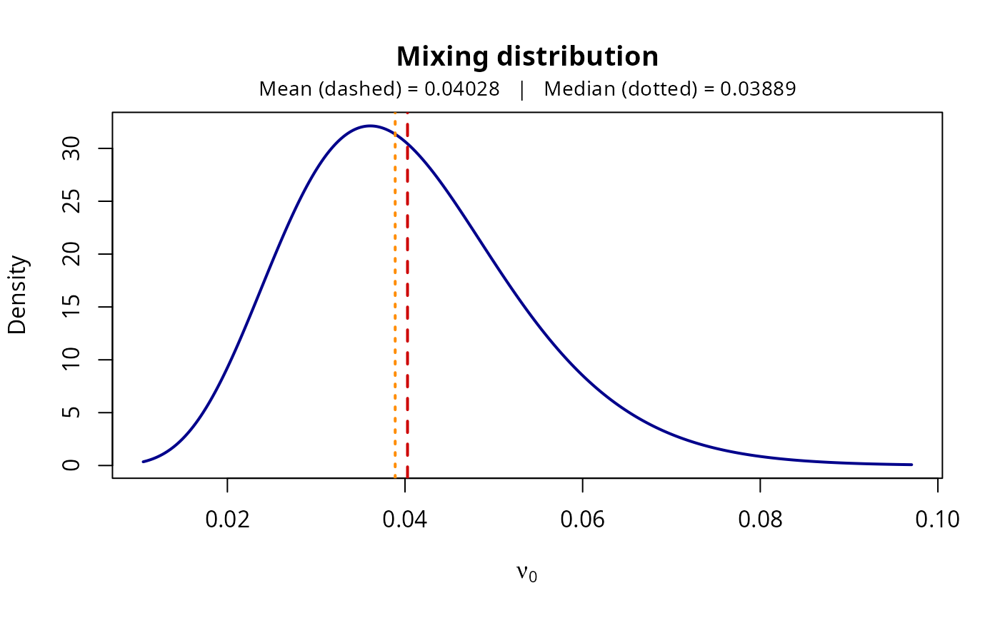

Plot the Mixing Distribution of a Fitted Gamma-Gamma Model
Source:R/GGcov_plot.R
GGcov_plot_mixing.RdPlots the gamma mixing distribution of nu0 implied by a fitted model: shape q (mixture shape) and rate gamma (mixture rate). The mean (dashed) and median (dotted) are marked with vertical lines and shown in a second title.
Usage
GGcov_plot_mixing(
fit,
coverage = 0.999,
n = 400,
xlab = expression(nu[0]),
ylab = "Density",
main = "Mixing distribution",
...
)Details
With covariates in the model, nu0 is the rate for a subject whose covariates are all 0 on the original scale (the fitted coefficients are on the original scale), so the plotted distribution describes that baseline.
Examples
fit <- GGcov_MLE(
Price ~ discount + gender + channel,
data = spend_data_sample,
subject = "Id"
)
GGcov_plot_mixing(fit)
